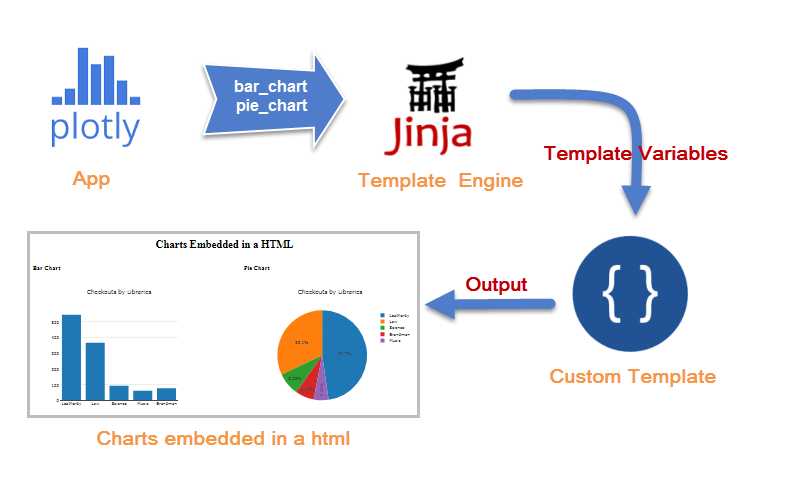
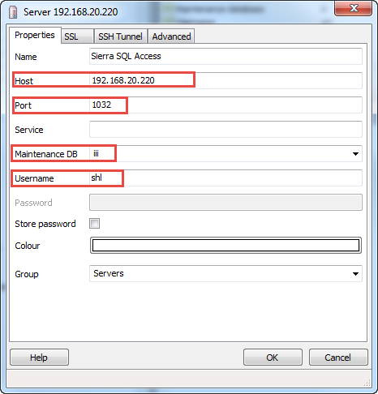
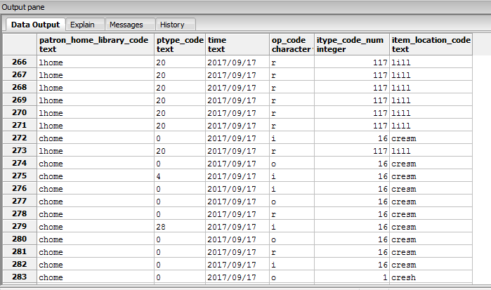
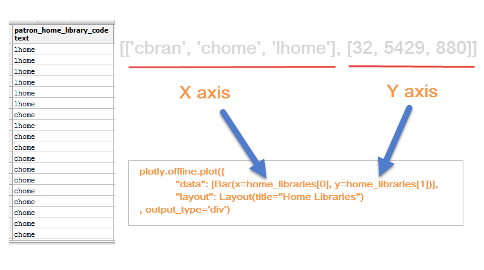
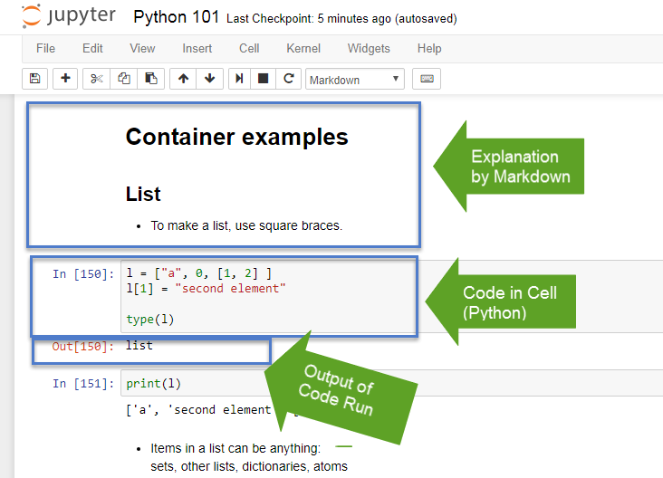

Sierra API
2017 SCIUG Conference at Chapman University
Presented by Seong Heon Lee, Systems & Technology Librarian
Hugh & Hazel Darling Law Library, Chapman University
Welcome everyone. Hi, my name is SeongHeon. I am a systems & technology librarian at Chapman University Law Library.
First of all, thank you all for being my audience. Today, I want to share about Sirera SQL API and Visualized Data Analysis.
This presentation is motivated by my summer project, that creats an automated/visualized report using Sierra SQL API.
Even though I am still on the progress of the project, I found some useful things that I want to share with you.
Final Product Preview
Circulation Transaction Report
Why don't we start with previewing an outcome that you are expected to build yourself after this presentation.
This will give us a chance to understand our goal of this presentation. During the last summer, I developed
a circulation transaction report using Sierra SQL API and Plotly. The basic idea is to extract data from
Sierra's PostgreSql database and to create a visualized report.
Why (1)?
Sierra has Web Management Reports
How many of you are using WMR?
What is your user exprience?
Decision Center
My first question is why we do need a custom report program. As you know, Sierra provides
with a build-in report prgoram, called Web Management Reports. How many of you are using WMR?
What is your user exprience? Personally, I do not have many words to say about it,
because I did not use it much. Preparing this presentation, I visited the report program to make
a quick evaluation. My first impression is that it has not been improved for a long time.
UI is old and not intuitive (Millenium logo, complex parameter setup). I know that Innovative has
a new data analytic product, Decision Center. Again, I have no word to say about Decision Center,
because I have no exprience. But I am sure that not all libraries are affordable to purchase the product.
Particularly for the libraries running a small or medium size of colletion, I am not sure
how much the product will pay off, even though they can purchase it.
Why (2)?
Who uses what?
Compare resource usages among libraries
Compare by other criteria:
locations
patron types
item types
transaction times
etc...
Haven't you ever been curious about how different libraries use Sierra resources? Chapman
University have three branches setup in Sierra, Leatherby, Law Library, Brandman.
Our library director, in one day, threw a genuine question. Leatherby and Law Library equally
share the cost of Sierra. In terms of the size of collections and users, the main library Leatherby
should use more resources. That was a legitimate assumpton. She wanted to see some factual data
to prove or not prove that assumption.
Why (3)?
Why not?
Plenty of data visualization tools
Sirera offers APIs (Direct SQL & REST API)
Customize a data report as you wish
Why not? There are many data visualization tools available. Many of them are open source.
For example, D3 javasript library is very popular. You may heard of many buzz words like big data,
AI, machine learning, etc. Our generation try to understand large amount of data that is being produced
every single second through online services. Although libraries do not handle extremly large data as big
companies do, we, librarians, have also genuine interest in user behaviors and interactions.
Exploring data
(Slide) Best motivation of all things: FUN! We are curious beings.
Contents
Plotly (Online & Offline)
Sierra SQL API
Some Examples (Sierra & Plotly)
Jupyter & Data Analysis
Now let's move on to the real part of presentation. First of all,
I will give you an idea on what I am going to cover. Here is the list. First,
I will start with Plotly library. I will demo how to create a chart online and offline.
Next, I will go through how to connect Sierra SQL API and get data from Sierra Database.
After that, I will combine the knowledge of both Plotly and Sierra SQL API. I will create
some example reports with Sierra data and Plotly charts. Finally, last but not the least,
I will introduce Jupyter, a data analysis tool, which is very popular among data scientists
for data analytics and communication.
What is Plotly?
A data analytics and visualization tool
Charts & Dashboard
Online and Offline
Open Source
D3.js(SVG) and stack.gl (WebGL) for web graphics
Great API Documentation & Examples
Plotly Online
Show Plotly examples, different types of charts. (Slide) >
Create a sample chart of library checkouts.
Plotly Offline (1)
Support multiple languages (Python, R, MATLAB, JavaScript, etc)
Python Library Plotly Offline Setup Make the "first" offline chart (as a html file)
Interactive: display modeBar
How to embed charts in a html?
Plotly supports many languages, so that users can choose what they want.
Plotly maintains separate webpages for each language. We will choose Python.
(Slide)
(Code, offline/first.py)
Plotly Offline (2)
How to embed charts in a html?
offline library: output_type option (file, div)
a template engine (Jinja2)
a template html
an embed example
In most cases, we may need embeded charts. With simply changing an option of
output type to div, we can create a embedded chart. (Code, offline/embed.py) >
Plotly Offline (3)

The plotly app output charts (bar_chart, pie_chart) as div, which will be feeded
into the template engine, Jinja2. The engine chooses a template file and embed the charts
in a specified HTML format.
Plotly: Summary
Creating different types of charts
Interactive
Data, Plot, Attributes
Data from file, url, db connector
Online & Offline (output_type, offline.plot())
Template engine (Jinja2) and a template html
(Slide) >
Sierra SQL API
PostgreSQL relational database
Sierra_view schema & 349 tables (read only)
Special permisson to "Sierra SQL Access" required
Access to:
bibliogrphical data (bib, item, holding)
transactional data (circ_trans, fine, patron)
system parameters (location, custom codes, loanrule, properties)
By default, 5 concurrent connections per user
PGAdmin, SQL Client
Version 3 or 4
Connect to databaseRun SQL queries
Show results in tables
Creating/testing SQL queries
The easiest way to work with Sierra database is using SQL Client. PostgreSQL has
its own SQL client, called PGAdmin. You can download it with PostgeSQl database on your local PC.(Slide)
(Slide) >
Setup PGAdmin

Setting PGAdmin is straightforward. (Slide) >
Know Sierra Database
SierraDNA Learn the structure of Sierra database
Category links and search box
Detailed table view
ERD (Entity Relationship Diagram) view
Example: Transactions > Circulation > checkout
PGAdmin displays all viewable tables (349 tables under sierra_view schema).
To understand Sierra database, you need to spend some times. You may browse through all tables in PGAdmin.
However, often times, some tables or fields are not obvious to understand. Then, you can go and refer to
SierraDNA, which is the most valuable resource to learn Sierra database. It includes detailed descriptions
on tables and fields. To find the tables in your concern, you can follow category navigation links or
use the search box on the right top. SierraDNA shows not only detailed table view but also Entity Relationship
Diagram. ERD is useful sometimes to create a join queries because it visualizes relationships among tables.
Find Checkouts (PGAdmin Demo)
-- Search for checkedout
SELECT pv.home_library_code, pv.ptype_code, c.checkout_gmt, c.renewal_count, pv.barcode, c.item_record_id
FROM sierra_view.checkout AS c
JOIN sierra_view.patron_view AS pv ON pv.id = c.patron_record_id
WHERE NOW() - c.checkout_gmt <= interval '1 hours'
AND pv.home_library_code = 'lhome'
Seeing once is better than hearing a hundred times. Let me show PGAdmin briefly.
And I will run an sample query in it. Once we are connected to Sierra database, you will see all tables
and fields. And you can see query pane and result pane. Right-clicking on a table, you can first 100 records.
The table shows all fields name and data types.
Plotly & Sierra
How to use Sierra data in Plotly?
Re-use Plotly offline script
But, with Sierra data
Three things:
get Sierra data (connection and query)
transform Sierra data to plotly data
generate a Plotly chart
Now, we have learned how to use Plotly and how to harvest Sierra data with a SQL query.
It is time to put them together. We will reuse the Plotly offline script, because visualization logic is
the same. However, this time, we will use actual Sierra data, instead of our dummy data. Here, we should
have in mind three things. (Slide) Because visualization part of Plotly script remains the same, we only need
to take care of the first two things: 1) getting data and 2) transforming it to the Plotly data format.
To get data, we need to connect and run a query on Sierra database. How do we do that in a Python program?
We will use a PostgreSQL database adapter, called psycopg2. With the psycopg2.
(the code "sierra_chart.py" ).
SQL Output

You may feel a little puzzled on the transformation part. Why do we need to transform
Sierra data before using it for Plotly? That's a good question.
Plotly X Y Axes

I have chart_data function that takes care of this business. The function reads through
each row of the patron_home_library_code column and count the transaction by the patron_home_library_code.
Finally, the function retuns a list that is right to feed into Plotly chart.
(Code, "sierra_chart.py)
The Plotly setup is exactly the same. We only changed the data part (x axis and y axis)
with the data that we get from Sirrra and transformed. Let's run the script, sierra_chart.py.
Embed Sierra Charts
Can we embed multiple charts in one HTML page?
Use the same SQL output from circ_trans
Run data transformations on each column
Pltoly option: output_type = div
Pass the chart outputs to the template engine
Prepare a template html that presents multiple charts
Can we present multiple charts in a html document? Yes, we can. First of all,
we have already Sierra data (circulation transaction). For this time, we have to run data transformation
on each column (patron_home_library, ptype_code, time, op_code, itype_code, item_location). We now can feed
the transformed data of each column to Plotly. Let's set the plotly option: output_type=div,
so that Plotly will ouput charts to divs. The chart outputs will be passed to the template engine and
the multuple charts will be displayed as specified in the template html file.
(the code "sierra_chart_embed.py)
Plotly Offline (3)
The plotly app output multiple charts as div, which will be passed
to the template engine, Jinja2. The engine uses a template file and embed the charts
as specified in the template HTML.
Interactive Program
Can we input specific options?
Python sys.argv - read user inputs from terminal
User Inputs:
days (10 => 5)
transaction types(o i f r = > o i)
ouput filename
python sierra_chart_embed.py 5 oi sierra_interactive.htmlNow, our program can create a ciculation transaction report with multiple charts. Currently,
our SQL query find four types transactions (i, o, f, r) in the last 10 days. What about if you want to find
only checkout and checkin in the last 5 days? Of course, you can change the sql query accordingly. However,
it is not a good idea to modify a sql query inside the program every time when we need a different serach.
(In teminal, run the script, sierra_chart_embed, interactively).
Sierra SQL API & Plotly: Summary
PGAdmin to build SQL commands
SierraDNA to learn Sierra Database
Plotly's Python offline with Sierra data
Database adapter to connect (psycopg2)
Data transformation & template
Interactive program
What is Jupyter?
Web application with its own host
Open Sources Project of Ipython
Ipython: Interactive Python Shell
Data science and scientific computing
Interactive data visualization
Share code, data, plots, and explanation
Publish in pdf, html, slide, and more
Documentation
Jupyter is a web application that can run on its own host. It started as an Open
Source Project of Ipython. Ipython is another project that enhances a Python shell for data science
and scientific computing (mathematics, physics, etc). In the Ipython shell, scientists can easily import
great tools like Numpy, Pandas, Matplotlib, SciPy. They can test their science experiments with running
programs interactively and find the result of their testing. Jupyter is a browser-based tool. Scientists
can do what they do with Ipython "on the browser". The great benefit of using Jupyter is sharing thoughts.
Jupyter has wonderful features: running codes (python, R, others), writing desciptions, data presentation,
and visualization of data with scientific plots.
Try Jupyter

Jupyter interface looks like this. On the top, there are menus and buttons.
For writing, we can use Markdown. In cells, we can write and run python codes. After running a code,
we can find output right below.
How to Use Jupyter on Your PC
Install Anaconda 3.6 (Link )
Open the anaconda terminal
Type "jupyter notebook" and Enter
If you are interesed, I strongly recommend to you to try on your PC. As I mentioned,
it runs on its own host. When you install on your PC, it will run on localhost:8888.
Plotly Offline & Jupyter (1)
Re-use the offline Plotly codes
Three tweaks:
Plotly.offline.i plot
init_notebook_mode(connected=True)
No output filename
More Info
Let's talk about how to use Plotly on Jupyter. We created offline Plotly charts.
We will re-use the same codes. We can present the same charts on Jupyter with a few tweaks,
(Show Jupyter/plotly.ipynb)
Plotly Offline & Jupyter (2)
Three ways to use Plotly on Jupyter
Write a script on a cell and run
Import a script as a module
Use a magic function %run with user inputs
I demonstrated three ways to use Plotly on Jupyter.
Plotly, Sierra SQL, and Jupyter: Summary
Plotly: View
Sierra SQL: Data
Jupyter: Communication
You saw how we can utilize three tools together. Plotly can be used to create
visualizated charts. We can collect library data using Sierra SQL API (circulation transaction,
patron, overdue, bib and items, acq/orders, systerm codes, etc). And we can present the Plotly
charts and Sierra data on Jupyter dynamically. On Jupyter, a browser-based web application,
we may more focus on communicating ideas.
What kinds of
This is my next question. In many time, we do not get to our point
because we cannot ask a right question? Is our point getting a fancy system which
can do milllion things meticulously and omnipresently? I don't think so. Our local library can
build our own tools that are suitable for their own purpose and in their own context.
Library Business & Data Analytics
Possible to create many analytics tools
Re-run or auto-run
Communicate on a Jupyter
Examples:
Expired Patrons with Checkouts
InterLibrary Loan Map:
ILL lendings in the last 100 days
ILL partners
Using the techniques shown previously, we can create many analytics tools.
Once we created the tools, we can re-run or auto-run them conveniently. On Jupyter, we can share
data and communicate what we find.
(Show the code, jupyter/sierra_tools.ipynb)
Thoughts
More data from Sierra:
WebPac usages (search, download)
Non-Sierra data:
EzProxy
LibGuides
Library building usage (gate counter)
Digital repository system
And so on...
Everywhere people talks about data today. We librarians have always handled
data. We can ask where our data is located. (for example, Slide)
We can ask, "can we harvest certain data?" "Is it valuable or not?"
What is the next?
[ Library Data Group ]
Seong Heon Lee, selee@chapman.edu
Finishing the presentation slide last Friday, I asked myself, "what is the next?"
I can finish this presentation with the capital "THE END". But something was going on in my mind.
So, I announce today that I will create "Library Data Group". This group will explore various
possibilities of using library data and of creating analytics tool. So, if you are interested in,
please send me an email. I think we can grow together teaching and learning each other.
Thank You.
My 10 year old daughter said that the last THANKS slide is
the most important and so must be pretty. Here we have. THANK YOU.